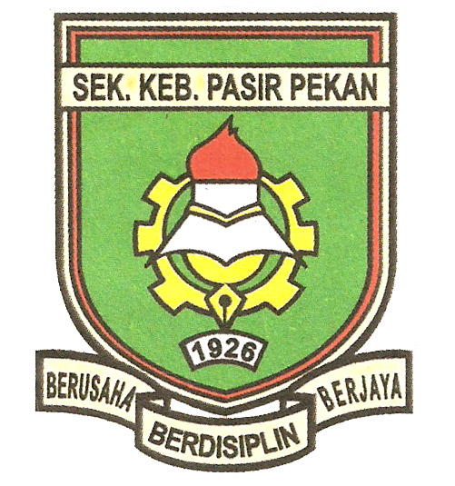

My educational journey began at a small, colorful kindergarten, a place filled with laughter and the joy of discovery. Here, I took my first steps into the world of learning, surrounded by nurturing teachers who introduced me to the basics of education through playful activities. These early years were crucial in developing my social skills and curiosity about the world around me. Every day was an adventure, filled with new experiences that laid the foundation for my lifelong love of learning.

As I progressed to Sekolah Kebangsaan Pasir Pekan for primary school, my world expanded both academically and socially. These formative years were marked by the development of foundational skills in reading, writing, and arithmetic. I remember the excitement of learning to read my first book and solving my first math problem. My teachers were instrumental in nurturing my growing curiosity, and I participated in various school activities that built my confidence and teamwork abilities. It was here that I discovered a passion for science and literature, subjects that would continue to intrigue me in the years to come.
Transitioning to SMK Dato' Ahmad Maher for secondary school, I found myself in a larger, more diverse environment. This was a period of significant growth, both intellectually and personally. The rigorous academic curriculum challenged me to think critically and analytically. I delved deeper into subjects like biology, chemistry, and history, which opened my eyes to the complexities of the world. Extracurricular activities, such as joining the debate club and participating in science fairs, played a crucial role in shaping my interests and skills. These experiences taught me valuable lessons in leadership, perseverance, and the importance of a well-rounded education.
After completing my secondary education, I took the next step by enrolling in a pre-university program at Sultan Ismail College. This period was all about preparing for the rigorous demands of higher education. The curriculum was challenging, designed to hone my analytical and problem-solving skills. I engaged in intensive study sessions, group projects, and presentations, which were crucial in developing my academic discipline and work ethic. It was during this time that I solidified my interest in computer science, drawn by the subject's blend of creativity and logic. This phase was not just about academics; it was also about growing as an individual, learning to balance studies with personal interests and responsibilities.
With a clear vision of my career path, I eagerly entered the International Islamic University Malaysia (IIUM) to pursue a degree in Computer Science. The university environment was both stimulating and demanding, pushing me to new heights of academic and personal achievement. The curriculum was comprehensive, covering everything from programming languages to data structures, algorithms, and artificial intelligence. I engaged in numerous projects and internships that provided practical experience and a deeper understanding of the field. My time at IIUM has been transformative, equipping me with the skills and knowledge needed to succeed in the ever-evolving tech industry. The support and guidance of my professors and peers have been invaluable, and I am immensely grateful for the opportunities and experiences that have shaped my journey so far.